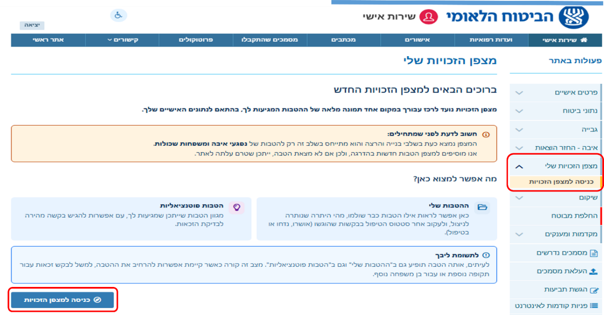
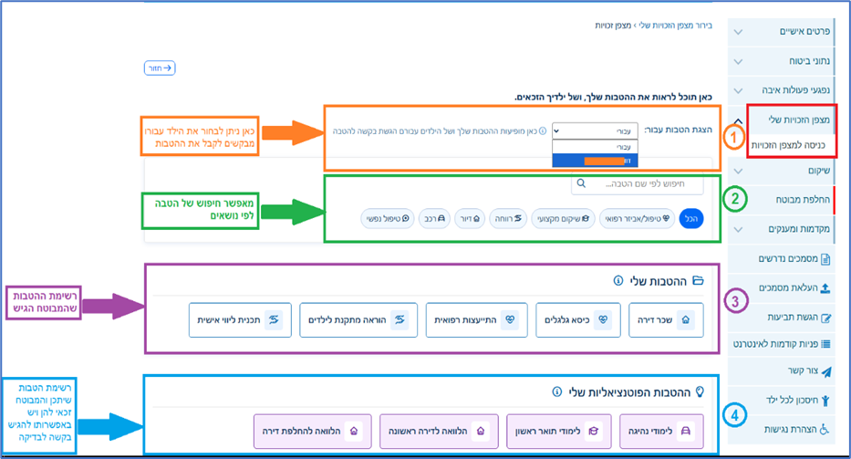
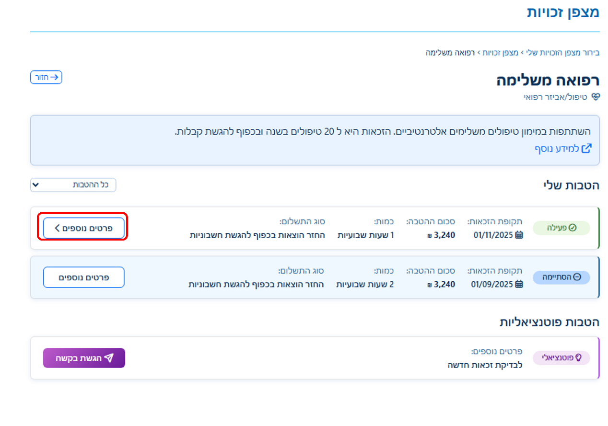
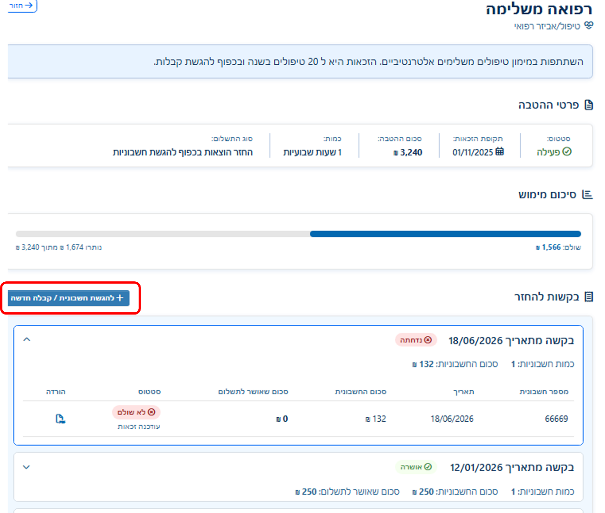
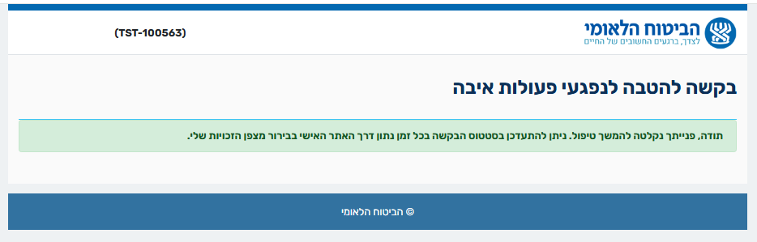
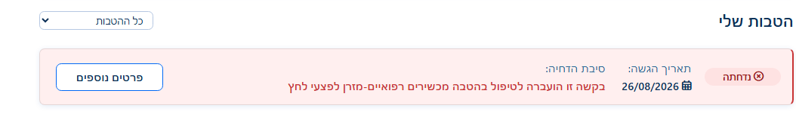

כל הזכויות וההטבות שלך במקום אחד
מצפן הזכויות מרכז עבורך מידע אישי על הזכויות וההטבות שלך כנפגע פעולות איבה. במצפן אפשר:
- לגלות הטבות שעשויות להתאים לך, ולבדוק כיצד ניתן להגיש בקשה למימושן.
- לעקוב אחר ההטבות והבקשות שלך, ולראות מה מצבן: בטיפול, פעילות, הסתיימו או נדחו.
- לראות את פרטי ההטבה והמימוש שלה, כולל תקופת הזכאות, היתרה שנותרה ובקשות להחזר שכבר הוגשו.
- להגיש חשבוניות וקבלות להחזר עבור הטבות פעילות, ישירות דרך המצפן.
למי המצפן מיועד בשלב זה
- נפגעי פעולות איבה שיש להם תיק איבה מוכר.
- משפחות שכולות שהוכרו כתלויים בעקבות פעולת איבה.
- ילדים קטינים עם תיק איבה או תיק שיקום עם הטבה פעילה. ההורה המוכר כנפגע איבה רואה את ההטבות של הילד בתוך המצפן שלו.
איך נכנסים למצפן
ארבע לחיצות מהאתר האישי, כפי שאתם נכנסים אליו בדרך כלל.
- היכנסו לאתר האישי של הביטוח הלאומי.
- בתפריט פעולות באתר שבצד ימין, לחצו על מצפן הזכויות שלי.
- לחצו על כניסה למצפן הזכויות. ייפתח דף הסבר קצר.
- בתחתית דף ההסבר לחצו על הכפתור הכחול כניסה למצפן הזכויות.

מה רואים במסך הראשי
המסך בנוי מארבעה אזורים, מלמעלה למטה. המספרים והצבעים כאן תואמים לסימונים בצילום המסך.
הצגת הטבות עבור
בוחרים עבור מי להציג את ההטבות: עבורכם או עבור אחד מילדיכם הקטינים.
מופיע רק אם יש לכם ילדים קטינים שאתם מקבלים עבורם הטבות. אם אין, פשוט לא תראו אותו.
חיפוש וקטגוריות
חיפוש הטבה לפי שם, או סינון לפי נושא: טיפול / אביזר רפואי, שיקום מקצועי, רווחה, דיור, רכב, טיפול נפשי. לחיצה על "הכל" מציגה שוב את כל ההטבות.
ההטבות שלי
ההטבות שכבר ביקשתם, כל אחת ככרטיס. לחיצה על כרטיס פותחת את דף ההטבה עם כל הפרטים והבקשות שהגשתם בה.
ההטבות הפוטנציאליות שלי
הטבות שלפי הנתונים שלכם ייתכן שאתם זכאים להן, ועדיין לא ביקשתם. לחיצה על כרטיס מאפשרת להגיש בקשה לבדיקת זכאות.

לגלות הטבה ולהגיש בקשה
ב"ההטבות הפוטנציאליות שלי" מוצגות הטבות שייתכן שמגיעות לכם לפי הנתונים האישיים שלכם, ועדיין לא ביקשתם אותן. לחיצה על כרטיס פותחת את פרטי ההטבה.
המגוון רחב: לימודים והכשרה מקצועית, דיור והלוואות, טיפולים ואביזרים רפואיים, תמיכה נפשית ועוד. לחיצה על כרטיס הטבה פותחת את פרטיה ואת האפשרות להגיש בקשה לבדיקת זכאות.
שני מצבים אפשריים, ואיך מזהים ביניהם
ההבדל מופיע על הכפתור עצמו, ובשורת "פרטים נוספים" שמעליו.
הטבות שמתחילות בהגשת בקשה
הגשת בקשהבכרטיס ההטבה כתוב: "לבדיקת זכאות חדשה".
- ממלאים טופס קצר ומצרפים את המסמכים.
- הבקשה נבדקת על ידי המערכת.
- הבדיקה מהירה, וברוב המקרים התשובה מתקבלת במהירות.
הטבות שמתחילות בשליחת פנייה
שליחת פנייהבכרטיס ההטבה כתוב: "לבדיקת זכאות אפשר לפנות לעובד השיקום".
- הפנייה נשלחת לגורם המקצועי המתאים.
- הזכאות נבדקת מולו, למשל מול עובד השיקום.
- הסטטוס יתעדכן במצפן.
טופס הבקשה: שלושה שלבים
הטופס קצר. בראשו מופיע סרגל שמראה באיזה שלב אתם נמצאים.
פרטי ההטבה
ממלאים את תאריך תחילת מימוש ההטבה. אפשר להגיש עד שנה אחורה.
מסמכים נדרשים
מצרפים את החשבונית או הקבלה, ומזינים את פרטיה. כל הטבה דורשת מסמכים אחרים, לפי מה שהוגדר לה.
הצהרה וחתימה
מאשרים את ההצהרה וחותמים, בעכבר במחשב או באצבע על המסך בנייד.
מה ממלאים בשלב המסמכים
אחרי השליחה ההטבה עוברת ל"ההטבות שלי", ומשם אפשר להיכנס אליה ולראות בכל רגע את מצב הבקשה.
הסטטוסים ומה הם אומרים
ליד כל הטבה מופיעה תגית סטטוס. חמישה סטטוסים אפשריים.
הגשתם בקשה ועדיין לא התקבלה בה החלטה.
מה עושים: ממתינים. הסטטוס יתעדכן כאן כשתתקבל החלטה.
ההטבה אושרה ויש בה יתרה לניצול.
מה עושים: מגישים חשבוניות וקבלות להחזר.
ההטבה נוצלה במלואה ולא נותרה בה יתרה.
מה עושים: לא ניתן להגיש בה קבלות נוספות. אם לדעתכם מגיעה לכם תקופה נוספת, בדקו ב"ההטבות הפוטנציאליות שלי".
הבקשה נדחתה. סיבת הדחייה מופיעה על הכרטיס.
מה עושים: קוראים את סיבת הדחייה. בשאלות, פונים אלינו.
הטבה שעדיין לא ביקשתם וייתכן שאתם זכאים לה.
מה עושים: לוחצים על "הגשת בקשה" ומבקשים בדיקת זכאות.

דף ההטבה ו"פרטים נוספים"
לחיצה על פרטים נוספים בכרטיס פותחת את התמונה המלאה של ההטבה, בשלושה חלקים.
פרטי ההטבה
הסטטוס, תקופת הזכאות, סכום ההטבה, הכמות וסוג התשלום, בדיוק כפי שאושרו לכם.
סיכום מימוש
פס התקדמות שמראה כמה מההטבה כבר נוצל וכמה עוד נשאר. כך תמיד תדעו כמה עוד אפשר לנצל.
בקשות להחזר
כל החשבוניות והקבלות שהגשתם בהטבה זו, מקובצות לפי תאריך הבקשה: מספר החשבונית, התאריך, סכום החשבונית, הסכום שאושר לתשלום והסטטוס. סמל ההורדה פותח את הקבלה שהגשתם.

איך מגישים חשבונית או קבלה להחזר
אפשר להגיש קבלות רק בהטבה במצב פעילה, כלומר שיש בה יתרה.
- היכנסו לדף ההטבה ולחצו על פרטים נוספים.
- באזור "בקשות להחזר" לחצו על הכפתור הכחול להגשת חשבונית / קבלה חדשה.
- ייפתח טופס מקוון. הפרטים שלכם וההטבה כבר ממולאים בו, כולל היתרה שנותרה לניצול.
- צרפו את המסמכים הנדרשים להטבה זו, למשל החשבונית או הקבלה.
- שלחו את הטופס.

מה קורה אחרי שהגשתם בקשה
הבקשה מופיעה בדף ההטבה ומתעדכנת שם, בלי שתצטרכו לעשות דבר.
- הבקשה מופיעה בדף ההטבה בסטטוס בטיפול.
- כשתתקבל החלטה, הסטטוס יתעדכן לאושרה או נדחתה, וב"בקשות להחזר" יופיע הסכום שאושר לתשלום.
- אם הקבלה שייכת להטבה אחרת: לפעמים קבלה מוגשת בטעות בהטבה לא מתאימה. במקרה כזה אנחנו מעבירים אותה להטבה הנכונה, ועל הכרטיס תופיע ההודעה "בקשה זו הועברה לטיפול בהטבה [שם ההטבה]". הבקשה לא אבדה, היא ממשיכה להיות מטופלת בהטבה המתאימה.

דברים שכדאי לדעת
המצפן מציג הטבות מהשנתיים האחרונות בלבד. הטבות ישנות יותר לא יופיעו בו.
אם הטבה שאתם מכירים לא מופיעה, ייתכן שהיא עדיין לא נוספה. הזכאות שלכם לא נפגעת מכך.
מופיעות באותו מצפן. בחרו את שם הילד ב"הצגת הטבות עבור".
בראש כל דף, מחזיר אתכם למסך הקודם.
שאלות ותשובות
כניסה ומי רואה מה
אני לא מוצא את "מצפן הזכויות שלי" בתפריט. למה?
בשלב זה המצפן מוצג רק למי שיש לו תיק איבה מוכר, למשפחות שכולות שהוכרו כתלויים, ולהורים של ילדים קטינים עם תיק איבה או שיקום פעיל. אם אתם שייכים לאחת הקבוצות ועדיין לא רואים את המצפן, פנו אלינו.
אני רואה את המצפן אבל אין בו הטבות. מה זה אומר?
המצפן מציג הטבות מהשנתיים האחרונות בלבד. אם לא הגשתם בקשות בתקופה זו, "ההטבות שלי" יהיה ריק. בדקו את "ההטבות הפוטנציאליות שלי" כדי לראות מה ייתכן שמגיע לכם.
הטבה שאני מקבל לא מופיעה במצפן. האם איבדתי אותה?
לא. המצפן נבנה בהדרגה והטבות נוספות מתווספות אליו. הזכאות שלכם לא תלויה במה שמוצג במצפן.
איפה אני רואה את ההטבות של הילדים שלי?
במסך הראשי, באזור "הצגת הטבות עבור", בחרו את שם הילד. האזור מופיע רק להורים שמקבלים הטבות עבור ילדים קטינים.
סטטוסים
מה ההבדל בין "פעילה" ל"הסתיימה"?
"פעילה" היא הטבה מאושרת שנשארה בה יתרה, ואפשר להגיש בה קבלות. "הסתיימה" היא הטבה שנוצלה במלואה.
הבקשה שלי בסטטוס "בטיפול" כבר הרבה זמן. מה עושים?
"בטיפול" אומר שהבקשה התקבלה ועדיין לא התקבלה בה החלטה. אין צורך להגיש שוב.
הבקשה שלי נדחתה. איפה רואים למה?
סיבת הדחייה מופיעה על כרטיס ההטבה עצמו, בשורה "סיבת הדחייה".
למה אותה הטבה מופיעה גם ב"ההטבות שלי" וגם ב"הפוטנציאליות"?
זה קורה כשאפשר להרחיב את ההטבה, למשל לבקש אותה לתקופה נוספת או עבור בן משפחה נוסף.
הגשת קבלות והחזרים
למה אני לא רואה את הכפתור "להגשת חשבונית / קבלה חדשה"?
הכפתור מופיע רק בהטבה במצב "פעילה". בהטבה שהסתיימה או שנדחתה אי אפשר להגיש קבלות.
איך אני יודע כמה עוד נשאר לי לנצל?
בדף ההטבה, באזור "סיכום מימוש", מופיע פס עם הסכום ששולם, מה שנותר, והסכום הכולל.
הגשתי קבלה ומופיע "בקשה זו הועברה לטיפול בהטבה אחרת". מה זה אומר?
הקבלה הוגשה בהטבה לא מתאימה, ואנחנו העברנו אותה להטבה הנכונה. הבקשה ממשיכה להיות מטופלת שם. אין צורך להגיש שוב.
הגשתי קבלה ולא קיבלתי הודעת אישור. האם הבקשה התקבלה?
אחרי שליחה תקינה מופיעה ההודעה "תודה, פנייתך נקלטה להמשך טיפול". אם לא ראיתם אותה, היכנסו לדף ההטבה ובדקו אם הבקשה מופיעה ב"בקשות להחזר". אם היא לא שם, הגישו שוב.
אפשר לראות את הקבלה שהגשתי?
כן. באזור "בקשות להחזר", ליד כל חשבונית יש סמל הורדה.
למי פונים בשאלות
בכל שאלה על המצפן או על הטבה מסוימת, אנחנו כאן בשבילכם.
[[להשלים: עובד/ת השיקום המלווה, טלפון המוקד, שעות מענה, קישור לטופס פנייה]]